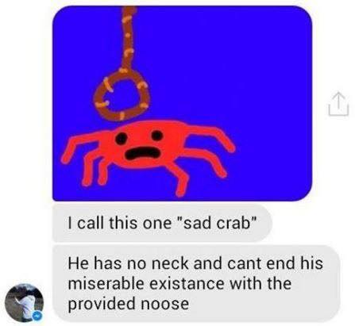

Hello World
The Senkaku Islands (尖閣諸島 Senkaku-shotō?, variants: 尖閣群島 Senkaku-guntō[6] and 尖閣列島 Senkaku-rettō[7]) are a group of uninhabited islands controlled by Japan in the East China Sea. They are located roughly due east of Mainland China, northeast of Taiwan, west of Okinawa Island, and north of the southwestern end of the Ryukyu Islands. They are also known as the Diaoyu Islands (Chinese: 钓鱼岛及其附属岛屿; pinyin: Diàoyúdǎo jí qí fùshǔ dǎoyǔ; also simply 钓鱼岛) in Mainland China, the Diaoyutai Islands (Chinese: 釣魚台列嶼; pinyin: Diàoyútái liè yǔ) in Taiwan, and the Pinnacle Islands.[8][9][10][11][12]
Following the discovery of potential undersea oil reserves in 1968 in the area and the 1971 transfer of administrative control of the islands from the United States to Japan, the latter's sovereignty over the territory is disputed by both the People's Republic of China (PRC) and the Republic of China (also known as Taiwan).[13][14][15][16][17]
